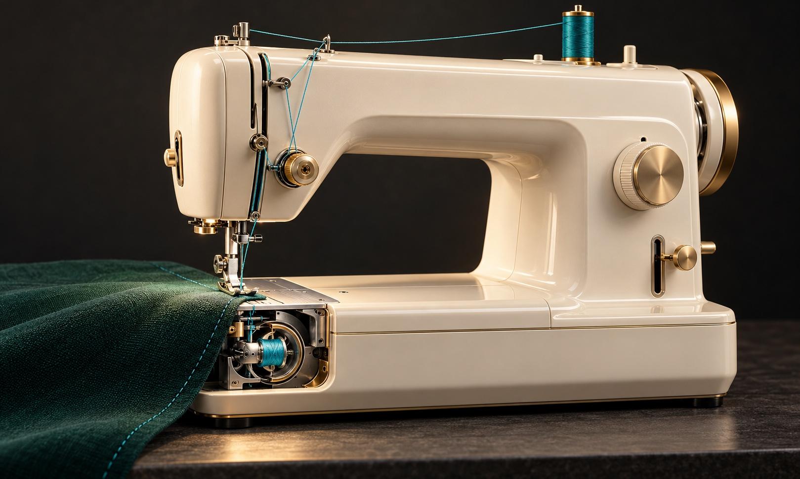

송고 준비본 · 실제 CMS 예약은 아직 등록하지 않았습니다.
2026-11-02(월) · 06편 · 예약 입력안 10:00
재봉틀은 어떻게 실을 엮어 옷을 꿰맬까 [굳이구지]
바늘 아래 숨은 두 실의 만남…한 땀씩 움직이며 살펴보는 재봉틀
 재봉틀의 바늘과 천을 눌러주는 노루발. 바늘판 아래에는 밑실을 공급하는 장치가 있다. (사진=Iryna Marienko/Unsplash)
재봉틀의 바늘과 천을 눌러주는 노루발. 바늘판 아래에는 밑실을 공급하는 장치가 있다. (사진=Iryna Marienko/Unsplash)[서울=뉴시스] 안재현 기자 = “제때 꿰맨 한 땀이 아홉 땀을 덜어준다.”
작은 문제를 제때 손보면 더 큰 수고를 덜 수 있다는 영어 속담이다. 찢어진 옷을 꿰매는 바느질에서 나온 표현이다. 재봉틀도 바늘이 오르내리며 한 땀씩 박음선을 만든다. 그런데 위에서 내려오는 실 하나만으로 어떻게 천을 단단히 이을까.

재봉틀의 바늘과 내부를 표현한 이미지로, 실제 기기의 구조와는 차이가 있다. 해당 이미지는 기사의 이해를 돕기 위해 AI 생성 후 가공 및 편집함. [그래픽=뉴시스]이번에 살펴볼 것은 윗실과 밑실을 쓰는 본봉 재봉틀이다. 바늘에 꿴 윗실과 천 아래의 작은 실패인 보빈에서 풀려 나오는 밑실이 서로 걸려 박음선을 만든다.
바늘이 천을 뚫고 내려갔다 조금 올라올 때 윗실에 고리가 생긴다. 천 아래에서 도는 훅이 이 고리를 잡아 보빈 케이스 둘레로 넓힌다. 그 안으로 밑실이 놓인 뒤, 위쪽의 실채기가 윗실을 당겨 고리를 조인다. 두 실이 걸리는 지점은 장력이 알맞으면 천 두께 안에 자리 잡는다.
바늘이 천에서 빠져나오면 이송톱니가 다음 땀을 놓을 만큼 천을 옮긴다. 노루발은 위에서 천을 눌러준다. 바늘의 왕복, 실을 잡는 훅, 실채기와 이송톱니가 제때 움직여야 한 줄의 박음선이 이어진다.
비주얼 뉴시스의 ‘안재현의 굳이구지 연구소’ 재봉틀편에서는 화면의 ‘한 땀 박기’를 눌러 바늘땀을 남겨본다. 버튼을 누른 채 연속으로 박거나 다음 땀의 간격을 바꿔볼 수도 있다.
‘파헤쳐보기’에서는 천 아래를 열어 훅이 윗실 고리를 잡는 순간부터 실채기가 고리를 회수하는 과정까지 천천히 살펴본다. 두 실의 걸림점과 천이 움직이는 시점도 따로 관찰한다.
체험은 수평 완전회전 훅을 쓰는 본봉의 작동 순서를 단순화한 모형이다. 실과 부품 사이의 간격은 보기 쉽게 조정했다. 실제 제품의 장력과 마찰을 계산하거나 재봉틀 정비 방법을 안내하는 자료는 아니다. 화면에서 들리는 작동음은 합성음이다.
◆ 비주얼 뉴시스에서 재봉틀로 한 땀씩 박고, 천 아래에서 두 실이 엮이는 과정을 살펴보세요. https://visual.newsis.com/goodeasy/sewing-machine/
크리에이티브 디렉터 = 안재현
복사용 하단 링크 · 고정 양식
<a href="https://visual.newsis.com/goodeasy/sewing-machine/">
◆ 비주얼 뉴시스에서 재봉틀로 한 땀씩 박고, 천 아래에서 두 실이 엮이는 과정을 살펴보세요. https://visual.newsis.com/goodeasy/sewing-machine/
</a>
내부 확인용 출처·사진 이용조건
내부 편집 메모 — 송고 본문에 포함하지 않음
예약 입력안: 2026-11-02(월) 10:00 KST
CMS 송고 예약: 미등록 (사용자 예약 입력용 자료)
카테고리 제안: 문화 · 생활 — CMS 실제 분류명은 확인 필요
속담 원문·뜻
https://dictionary.cambridge.org/dictionary/english/stitch-in-time-saves-nine?topic=immediately
A stitch in time (saves nine). 본편과 같은 한국어 번역. 특정 인물의 발언으로 쓰지 않음.
본봉의 두 실
https://museum.global.brother/guide/zone/1/5?lang=en
Brother Museum 공식 설명. 바늘실과 보빈실, 바늘·셔틀의 타이밍을 확인. 발명 최초 인물 논쟁은 원고에서 다루지 않음.
본봉 작동 순서
https://www.faa.gov/sites/faa.gov/files/regulations_policies/handbooks_manuals/aviation/prh_change1.pdf
FAA Parachute Rigger Handbook 6장. 회전 훅·윗실 고리·밑실·실채기와 이송 순서 확인. 원고는 특정 모델이나 모든 스티치 방식으로 일반화하지 않음.
첫 사진 원본
https://unsplash.com/photos/a-close-up-of-a-sewing-machine-on-a-table-ebgaor66TSk
Iryna Marienko. 무료 Unsplash 사진이며 Unsplash+가 아님. 다운로드한 원본비율 2400×1800을 1600×1200 JPG로 축소. 사진 속 실제 기기의 브랜드·모델은 원고에서 특정하지 않음.
사진 이용조건
https://unsplash.com/license
2026-10-30 확인. 상업·비상업 무료 사용 허용. 사진 자체 판매나 경쟁 사진 서비스 구축에 사용하지 않음. 촬영자 출처를 자발적으로 명시.
두 번째 사진: 2026-10-30 내장 GPT 이미지 생성 도구로 새 제작한 무문구 이미지. 실제 제품 사진·정확한 구조도로 제시하지 않음. 본편 스크린샷 또는 본편에 설치된 자산이라고 주장하지 않음.
본문 사진은 모두 RGB JPG. 첫 사진 1600×1200(4:3).
클로드는 사용량 소진으로 후속 검수를 요청하지 않았음. 삼단검수 완료 원고라고 표시하지 않음.
본편 개선 작업과 별도로 준비한 송고 원고이며 실제 예약 전 링크 및 최종 개선본 반영 여부 확인 필요.